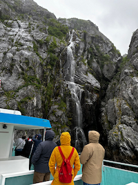

My name is Keyarra Bassett. I was born and raised in beautiful Cheyenne Wyoming in the United States. I returned from my mission in Paraguay and pretty much immediately started with Byu Pathways. I have two older sisters and one little brother. I went on a trip to Alaska recently and I loved it.
